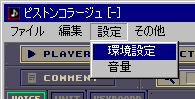
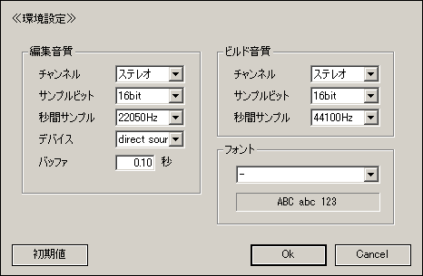

トラブルシューティング
音質を下げることでアプリケーションの処理を軽くすることができる。
パソコンの性能が十分でない場合は低音質で編集して高音質で *.wav 出力すると言う方法もある。
メニューのプロジェクト → 設定 → 環境設定 で音質などを変更。


秒間サンプルを 44100Hz から 22050 に変更した場合、処理の重さは半分になる。
秒間サンプル 11025Hz は、処理の重さが 1/4 になるが、音質はとても悪い。
ステレオをモノラルに変更した場合、処理の重さは半分になる。
サンプルビット 16 を 8 に変更しても処理の重さはあまりかわらないようだ。